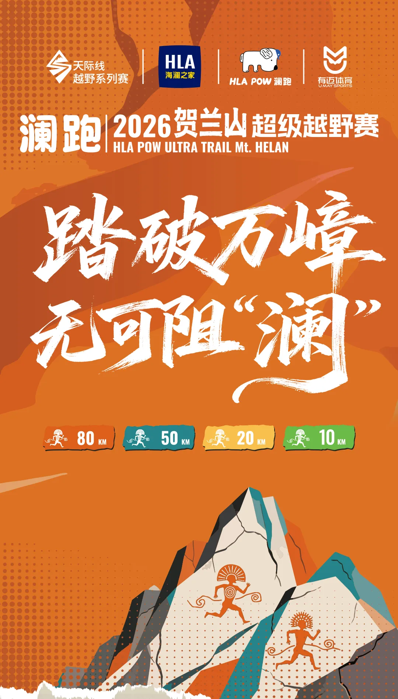
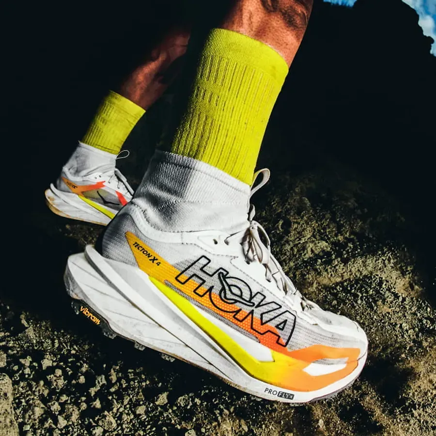
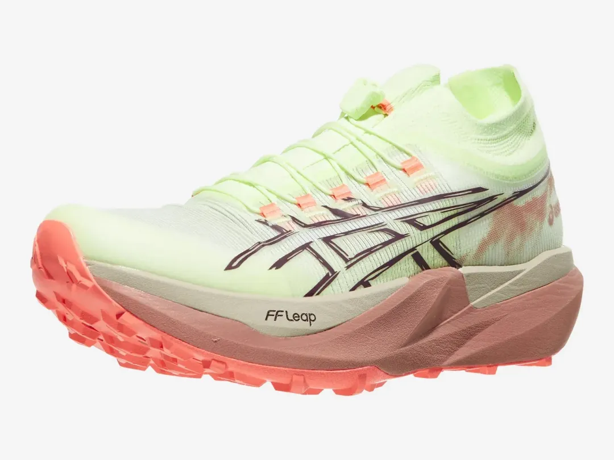
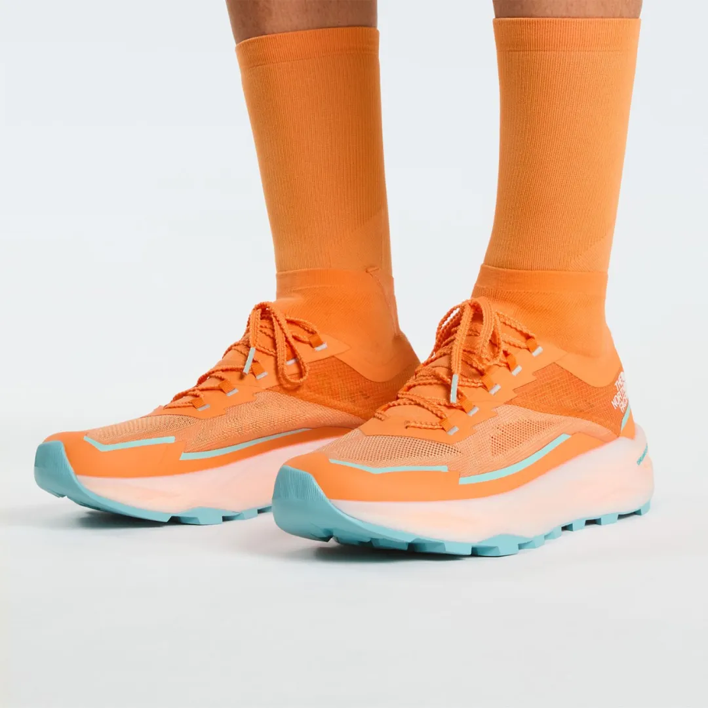
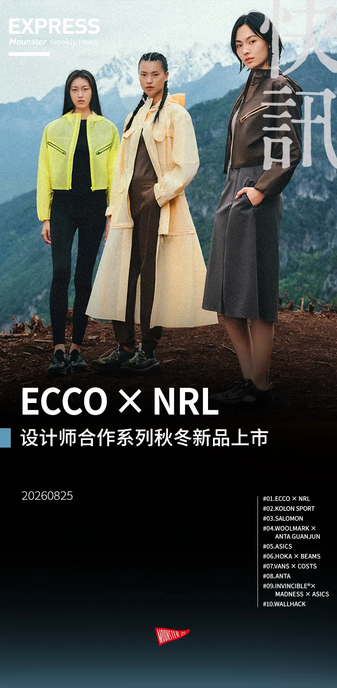
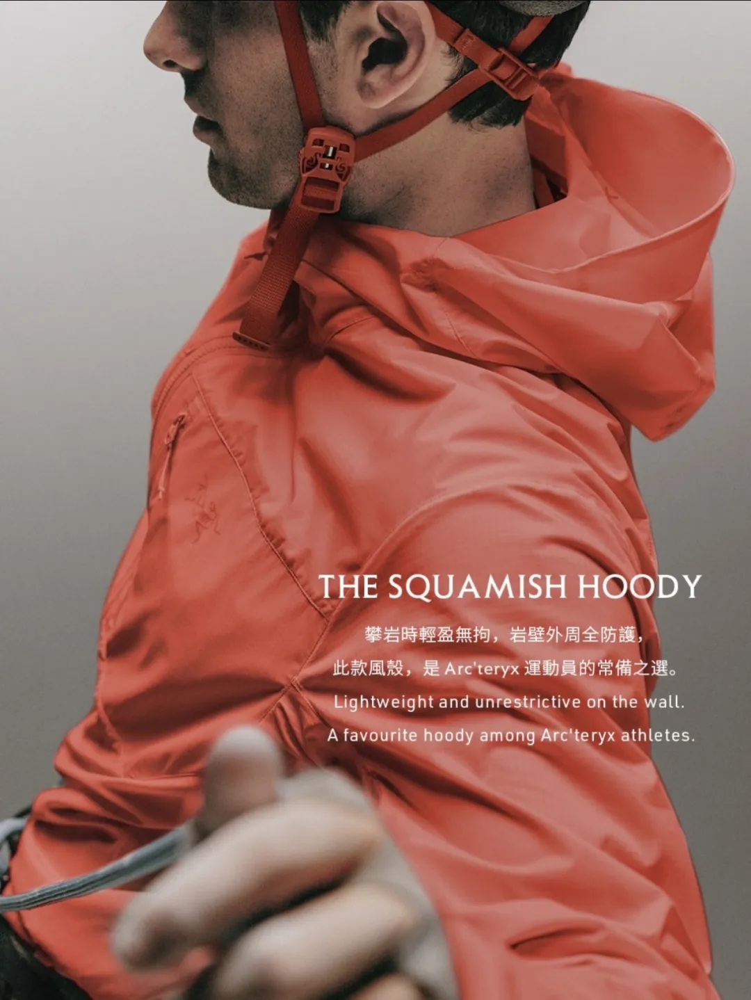
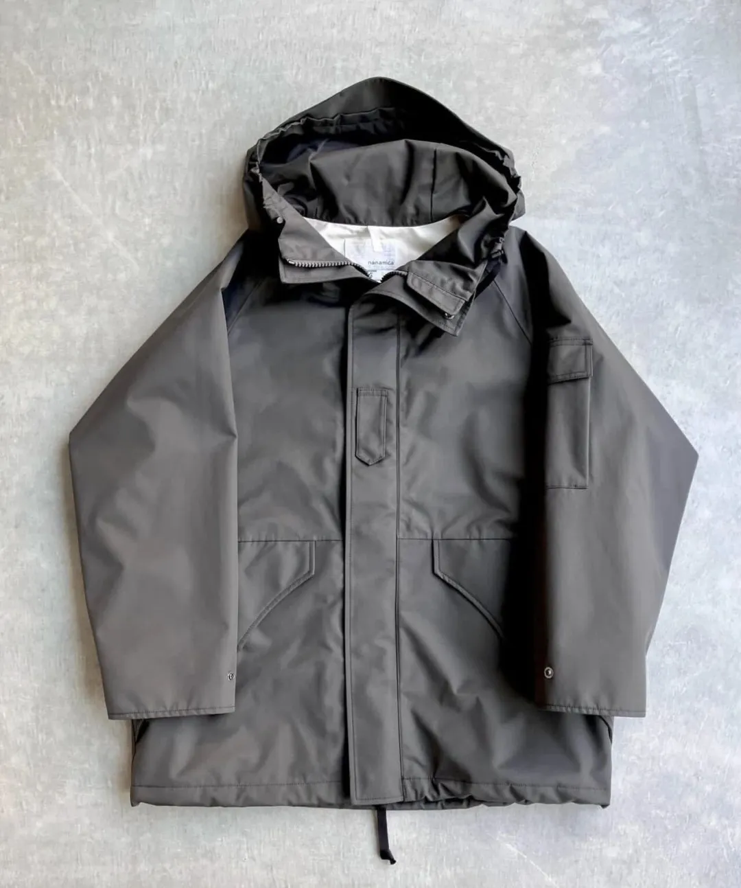
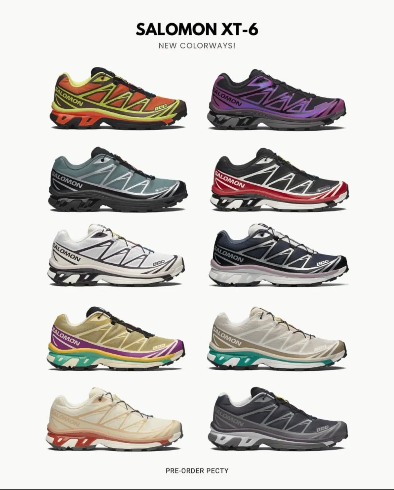

OUTDOOR VISION TIMES · EST. 2026
户外视野时报
山系文化 · 装备前沿 · 时尚趋势 · 赛事动态
2026年8月25日 · 星期二
VOL.01 · 初秋号
定价：仅供传阅
■ 本期头条 HEADLINE
UTMB前夕装备大战白热化 · 山系穿搭从山野走向写字楼 · 排骨羽绒成秋冬叠搭万能公式
品牌资讯
BRAND NEWS
滔搏拿下Sierra Designs中国独家运营权，户外品牌矩阵再添猛将
滔搏与韩国Hilight Brands正式签署战略合作协议，成为1965年诞生于美国加州的经典户外品牌Sierra Designs在中国市场（含内地、香港、澳门）的独家运营方，全权负责品牌传播、市场推广、全渠道销售及消费者运营。品牌以"Think Outside"为哲学，在专业户外基因上融入先锋美学，推动从山野走入城市。年内将落地中国首店，2026秋冬系列同步亮相。

▸ 来源：ecosports.cn 阅读原文
海澜之家"亲儿子"HLA POW澜跑杀入越野跑圈，一年冠名四场大赛
海澜之家旗下专业运动品牌HLA POW澜跑2026年一口气冠名4场越野赛：9月北京越野跑挑战赛、9月26-27日巴松错超级越野赛（西藏林芝）、10月10-11日贺兰山超级越野赛（宁夏石嘴山）、11月无锡宜兴阳羡100。品牌连续三年独家冠名无锡马拉松，路跑底盘扎实，此次将专业装备线押上越野赛场，提供从参赛服到完赛物资的全套装备。

▸ 来源：RidingTalking嘴滑 阅读原文
Salomon萨洛蒙"竞速基因"进化论：从滑雪固定器到96克超轻跑服
1957年Salomon以"Skade"前掌固定器解决滑雪操控问题，此后延伸至完整滑雪装备体系。进入越野跑领域，Quicklace快速系带、地形专属抓地设计、持续减重等创新均围绕"效率"展开。2005年S/LAB系列让顶级运动员直接参与研发，将赛道痛点落实到产品细节。本季FALCON FLY高端竞训跑服第四弹夏季系列，将竞速基因延伸至跑服——超轻跑步雨壳仅重约96g（约两个鸡蛋），搭载waterproof性能科技面料与超轻防水拉链，多片式结构拼接优化肩背活动自由度，实现"让装备从跑者身体上退后"的设计哲学。
▸ 来源：Nuz楽此 阅读原文
◆ ◆ ◆
新品动态
NEW RELEASES
UTMB 特辑
UTMB前夕新鞋扎堆发布
八大品牌竞速旗舰横空出世 · 一双比一双顶
adidas Agravic Speed Ultra EVO
500美元"性能怪兽"，搭载U型EnergyRim技术+LightStrike Pro泡棉，250g，12月上市，定位顶尖越野竞速。
Salomon S/Lab Genesis 2
四年磨一剑，optiFOAM超临界发泡中底，contaGRIP大底接地面积+43%，258g/1898元，技术地形长距离利器。
Scarpa Alien Ultra / Sky
意大利老牌回归，ATPU超临界发泡中底+Vibram Megagrip大底，Ultra配30%碳纤PEBAX板(295g/$279)，Sky配玻纤尼龙板(235g/$249)。
HOKA Tecton X 4
新一代竞速旗舰，PROFLY X双层PEBA泡棉+平行碳板，Matryx Micro鞋面，Vibram Megagrip Litebase大底，275g/2099元。

ASICS Metafuji Trail 2
UTMB冠军战靴，X形碳板优化上下坡，双密度FF LEAP+FF BLAST PLUS中底，ASICSGRIP大底3.5mm齿耳，255g/1690元。

The North Face Off-Trail Ultra
长距离技术地形怪兽，双密度DREAMBOUND注氮超临界EVA中底，Surface CTRL大底5mm齿耳，264g/1398元。

▸ 来源：户外实验室OutdoorLab 阅读原文
轻量化极限
X-Bionic TerraSkin X-SLR：仅124克的"垂直公里赛"战靴
外形低趴如足球鞋/钉鞋，针对垂直公里赛（5km内爬升1000m，平均坡度超50%）设计，前掌抓地为主、削减后跟、单层鞋面。同期发布155g二合一越野背心T恤套装。普通越野鞋重270-310g，这双鞋直接减半，堪称"短时间送人上山"的极致装备。
▸ 来源：绊脚石TripStone 阅读原文
设计师联名
ECCO × NRL设计师合作系列秋冬新品上市

丹麦鞋履品牌ECCO与NRL推出设计师合作秋冬系列，将北欧极简美学与户外机能融合，打造兼具日常穿搭与轻户外功能的鞋履新品，延续ECCO舒适制鞋传统的同时注入山系文化设计语言。
▸ 来源：Mounster山系文化 阅读原文
旗舰羽绒
Sierra Designs HALFDOME轻量羽绒服：优胜美地灵感的畅销单品

灵感源自美国优胜美地国家公园半球形花岗岩岩体HALFDOME，运用特色绗缝工艺将HALFDOME标识融入衣身，兼顾创新设计、轻量化表现与硬核保暖科技。下半年将推出迭代升级版，优化轻量化与保暖性能，更新配色与细节。
▸ 来源：ecosports.cn 阅读原文
国货回应
波司登轻薄羽系列：用时装逻辑做排骨羽绒
女款龟背廓形为亮点——落肩不卡腋下，背部微阔余量制造空气感，为叠穿留出空间；男款连帽廓形干净利落。微光泽定制时装面料去除传统羽绒"户外感"，700+高蓬鹅绒、90%绒子含量，配双头拉链、抽绳下摆等时尚细节。
▸ 来源：NOWRE 阅读原文
◆ ◆ ◆
时尚趋势
FASHION TRENDS
山系穿搭的尽头是"无感"
URBAN OUTDOOR · 去重装，迎无感
风向一：轻量风壳接棒硬壳
传统三层冲锋衣防风防水但走路唰唰响、闷热僵硬。今年风头最劲的"轻量风壳"重量压缩在100g-180g之间，柔软无声，完美应对早秋温差与室内空调。代表单品：始祖鸟Squamish Hoody（Tyono™ 30尼龙面料，可折叠掌心大小）、Goldwin Minimalist Wind Jacket。

风向二：低饱和大地色全面洗版
告别荧光黄、救援红，今年山系流行色转向苔原绿、烟灰棕、矿物灰、水泥白与深橄榄色，天然带有"不张扬的高级感"，无缝融入写字楼与城市咖啡馆。代表单品：nanamica ALPHADRY Utility Shirt工装衬衫，用吸湿排汗科技面料打造日常通勤服饰。

风向三：脚部"彻底解套"与厚底复古重塑
重装徒步鞋被留在山上，城市交给轻量越野跑鞋与后运动修复鞋。圆润鞋头与高辨识度厚底中底，成为拉长腿部线条、制造"上轻下重"廓形感的神器。代表单品：Salomon XT-6/ACS Pro（Quicklace快拆鞋带+强烈线条轮廓，早秋低饱和苔原绿与水泥灰配色弱化竞技感）、Roa Hiking Katharina。

▸ 来源：徒步指南WalkerMode 阅读原文
拒绝装备堆砌 · 三个公式穿出顶级松弛感
公式 01
轻风壳（始祖鸟/Goldwin）+ 重磅阔腿工装裤 + 粗针织羊毛袜
上半身微薄哑光风壳制造干练感，下半身重磅棉/卡其阔腿裤压住重心
公式 02
短款防风马甲（Snow Peak）+ 宽松长袖T恤 + 降落伞裤
早秋温差大，马甲增加层次感又不臃肿，降落伞裤轻薄透气
公式 03
排骨羽绒 + 连帽卫衣/西装/风衣叠穿
窄绗缝结构有"秩序感"，能撑住外层不塌不皱，叠两层也不显壮
秋冬趋势深度
排骨羽绒：从"内胆"翻身成叠搭万能公式
为什么排骨羽绒能"叠一切"？版型服帖是前提——排骨绗缝把绒朵锁在固定格子里，厚度均匀、不跑绒不鼓包，穿在外套里不拱起一团，穿在T恤外也不松垮。竖条绗缝有纵向延伸感，视觉收窄身形，叠两层也不显壮。窄绗缝结构带有"秩序感"，既有填充物的温暖，又有外套的轮廓。
风格层面，排骨羽绒没有强烈机能感或运动感——和卫衣搭能街头，和衬衫搭可通勤，和西装搭是老钱，和连衣裙搭又有造型冲突感。韩女街拍里松松套在连帽卫衣外，时装博主做西装大衣间的"夹心层"，通勤者塞在风衣里。
年轻人选衣服的逻辑正在转弯：买一件厚羽绒服一年穿不到几天，买一件轻薄排骨羽可以从初秋穿到深冬，叠穿玩法撑满整个季节。羽绒服终于不再是一年穿一个月的工具，而是可以穿上整个秋冬的风格单品。
▸ 来源：NOWRE 阅读原文
赛事视野
EVENTS & RACES
关于UTMB环勃朗峰超级越野赛
每年八月底在法国阿尔卑斯山区举办的UTMB（Ultra-Trail du Mont-Blanc）是越野跑界的年度盛会，环绕勃朗峰途经法国、意大利、瑞士三国。各大品牌均掐此时间点发布年度旗舰越野跑鞋，今年adidas、Salomon、Scarpa、HOKA、ASICS、The North Face、Nike ACG、Mount To Coast等品牌集体推出新品，竞速越野跑鞋正式进入"超临界发泡+碳板"时代，重量下探、抓地升级、价格攀升。
户外视野时报
OUTDOOR VISION TIMES · 山系文化观察者
本期内容整理自微信公众号及体育产业媒体公开报道
图片版权归原作者所有，仅供资讯参考
本期内容整理自微信公众号及体育产业媒体公开报道
图片版权归原作者所有，仅供资讯参考
■ 原文链接索引 ■
— THE END —